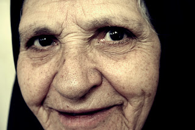

17 La Muerte
Через год мне исполнится 30. Чувствую, что времени у меня почти нет. Постоянно присутствует ощущение, что смерть ходит где-то поблизости кругами. Это ощущение - очень сильный стимул, который подстегивает, подталкивает к действиям. Почему несколько раз в моей жизни в снах ко мне приходил некто в образе смерти (в последний раз - старуха) и звал меня с собой? Тяжелых болезней у меня никогда не было..
Помню отчетливо один из таких разов. Мне тогда было лет 15-17, я начала работать в лаборатории. Мне снится, что я ставлю какой-то опыт и ко мне вбегают однокашницы с криками: "за тобой смерть пришла!" Я им отвечаю: "вы ее отвлеките пока, а я спрячусь". Я долго пряталась от нее в подземных коридорах НИИ, чувствуя, что она бродит где-то поблизости и ищет меня, пока мне не надоело прятаться. Тогда я выбралась на поверхность, на улицу. Уж лучше стокнуться с ней при дневном свете на улице, чем в мрачных подземных коридорах НИИ, когда вокруг свисают провода, где-то шипит газ, который так и норовит вырваться из баллонов, пыхтят, кряхтят и отстукивают ритм разные чудаковатые механизмы, а по стенам пробегают мелкие ручейки воды. Оказавшись на улице, я крикнула ей - выходи! Вскоре она проявилась. Она начала звать меня с собой, но я послала ее ко всем чертям и сказала, чтобы больше не смела ко мне являться. В самом деле, она долго не не объявлялась. Последний раз я ее видела (в обличии старухи, надо сказать, не лишенной чувства юмора) в январе этого года:
Acabo de ver un sueño donde me encontre con una vieja muy horrible en el traje negro. Y con lo que era horrible ella me sonreia, pero eso no era sonrisa de bondad. Esa vieja dijo que era la muerte y me dijo que la siguiera. Pero yo la mande que se fuera al diablo, en este momento me senti un coraje, aunque la tenia miedo, estuve lista a pelear con ella si era necesario. Pero yo sentia que mi voluntad no le permitiria acercarse. Todo el sueño no pude deshacerme de este personaje, me persiguia. Era bastante raro, porque por regla los personajes de los sueños no son tan impertinentes y pegajosos. Hasta la vi en los reflejos. Me parecio que no era un personaje comun y corriente, pero era alguna criatura "ajena". Ella me dijo que un dia iba a volver, yo hasta tuve alguna pelea con ella (pero de un modo que aun no logro entender.. Lo unico que se que logre vencer algo, pero que?). Despues le dije que si ella tenia ganas de aparecer en mis sueños de nuevo tenia que enseñarme algunas cosas sobre sueños lucidos, entonces yo le daria un permiso de aparecer una vez mas. Pero entonces me desperte. Nunca mas la vi.